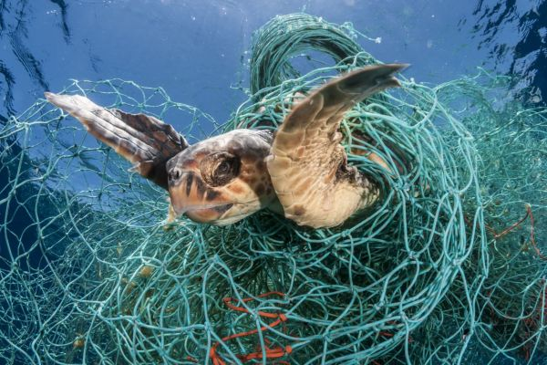
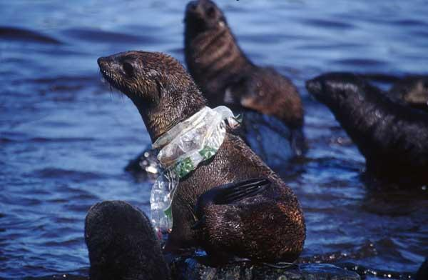
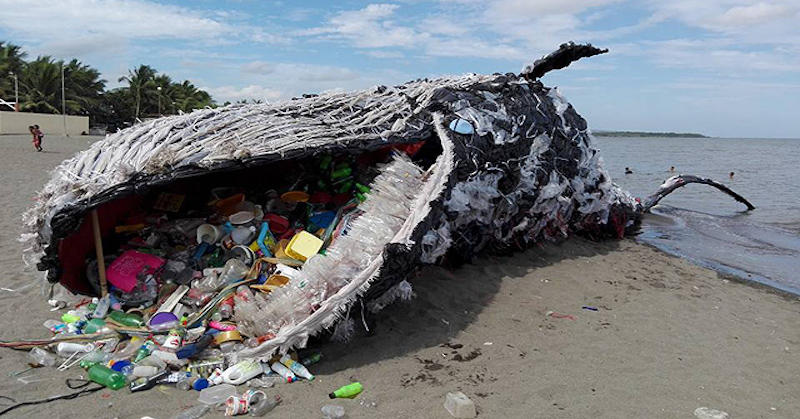
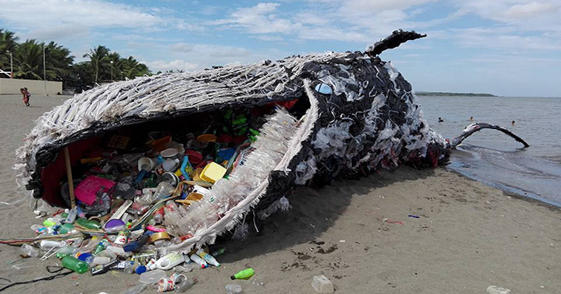

Too Much Trash
As a society, we take our beautiful oceans for granted. By just one toss of a plastic cup on a beach, you are aiding in the increase of marine debris. According to the Ocean Health Index, "Marine debris is any human-made solid material that is disposed of or abandoned on beaches, in waterways that lead to the ocean, or in the ocean itself, regardless of whether disposal occurred directly, indirectly, intentionally or unintentionally". About 60%-80%of that trash is composed of plastic waste. The amount of waste in our oceans has accumulated so much over the years that there is an official landmark called the Great Pacific Grabage Patch. This "island" holds over 80,000 tons of plastic alone, and that amount doesn't include the debris left in other oceans.
Why is this so important?
Because of all the marine debris in our oceans, the ecosystems down below are being harmed. Innocent animals mistake the trash for food, or get stuck in the waste and unintentionally hurt themselves. Also, most of this trash isn't biodegradable, and will continue to float aimlessly for years and years. Our beautiful oceans will stay polluted and become more dangerous if careless actions continue.
 
 


What can I do to help?
- Use reusable water bottles at school or work
- Bring a reusable cup for your morning coffee at Starbucks or Dunkin Donuts
- Purchase reusable straws in bulk
- Recycle plastics, papers, and metals
- Organize beach cleanups
- Always throw out your trash
- Never litter
- Encourage others to do the same!